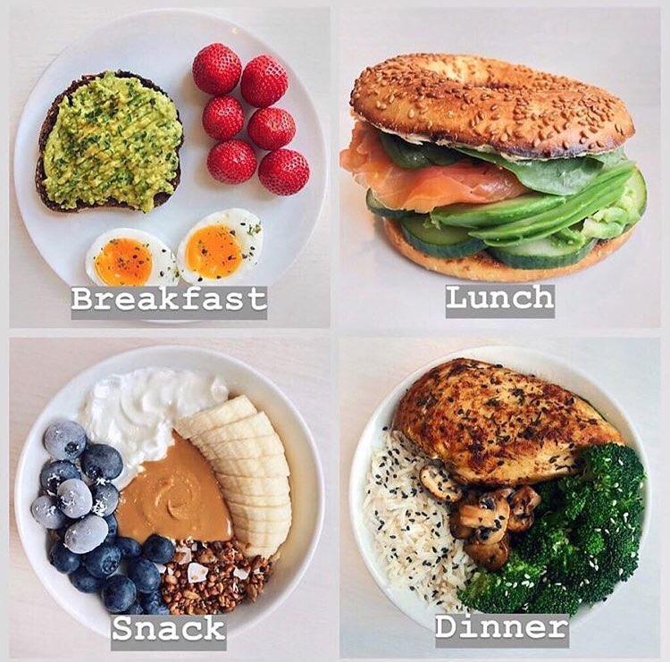

HOW
영양

- 탄수화물
에너지를 공급한다. 가장 중요한 영양소로, 1g당 4kcal의 에너지를 낸다. 보통 곡물에 많이 들어있다고 알려져 있다.
- 지방
역시 에너지원으로 1g당 9kcal로 가장 효율적인 에너지원이다. 요즘엔 비만의 원인으로 지목받아 이미지가 굉장히 나빠졌다.사실은 비만의 결과다. 육류, 생선, 우유, 기름 등에 존재한다.
- 단백질
에너지원으로 1g당 4kcal의 에너지를 낸다. 주로 난류에 많이 들어있다고 알려져 있다.
- 아미노산
단백질의 구성성분으로서 체내에서 합성하기 힘든 필수 아미노산은 음식을 통해 섭취해야 한다
마인드셋
- 동기부여를 시각화라
- 과정을 사랑하라
- 작은행동부터 시작하라
- 자기자신을 칭찬하라
- 다이어트는 건강의 마라톤이다